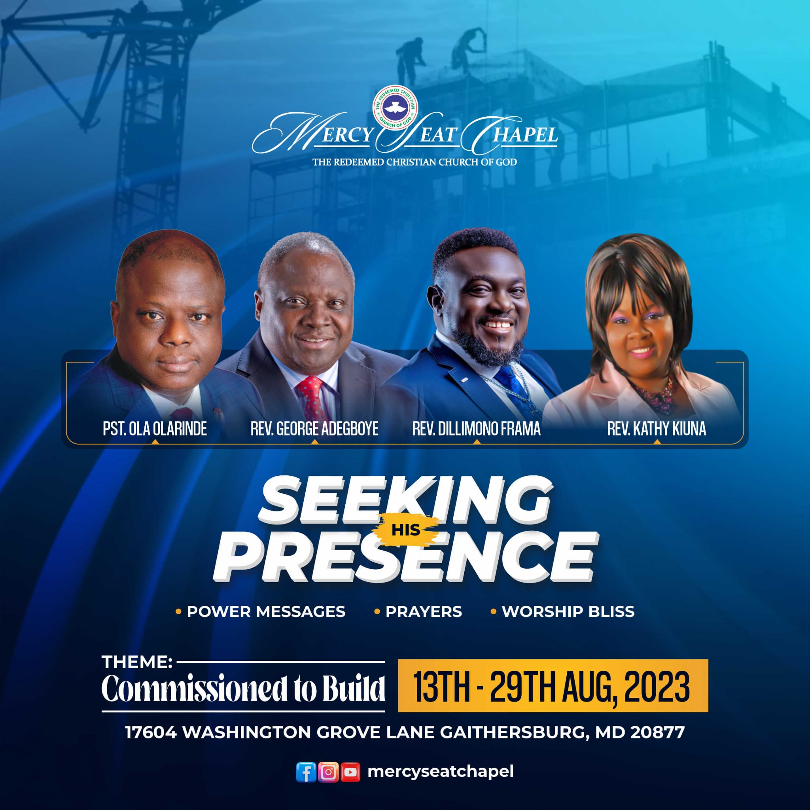

SHP 2023
Build For God, Build Your Dynasty
Pst. Ola Olarinde

Seeking His Presence (SHP) is an annual event at Mercy Seat Chapel that features several programs that culminate in bringing transformational and life-changing encounters to all the participants. The programs seek to bring to each one a full experiential knowledge of what the presence of God signifies and leads them to understanding how to perpetually walk in that realm.
The event, which usually runs for about six to seven days has witnessed the awe-inspiring presence of God through Intense Praise and Worship, Prayers, Music Concerts, various Empowerment trainings and exhaustive teaching of the word. Seasoned Speakers and Ministers are sought out from all over the world, who by the grace of God bring the supernatural quality and excellence the program exudes.
Intense praise, worship and music concerts.
Seasons of prayer and divine encounters.
Exhaustive teaching from seasoned ministers.
Various empowerment trainings.
The event has to its record many firsts including bringing the globally successful and multiple award-winning gospel Artist, Sinach, to the East Coast for the first time. Other music artists such as Don Moen, Mike Aremu and Ada Ehi have also ministered. Numerous manifestations of God’s power and testimonies of great dimensions of liftings and promotions both physical and spiritual, divine impartation have been the outcome of the program.
Each year the program gets bigger and better and leaves such lasting impacts that extend from one year to the other. Over the years, men and women, members and non-members partner with the church to host this event and for each one of them, it has been greatly rewarding.
Pst. Ola Olarinde
Rev. Kathy Kiuna
Rev. Dillimono Frama
Men and women, members and non-members partner with the church each year to host this event.